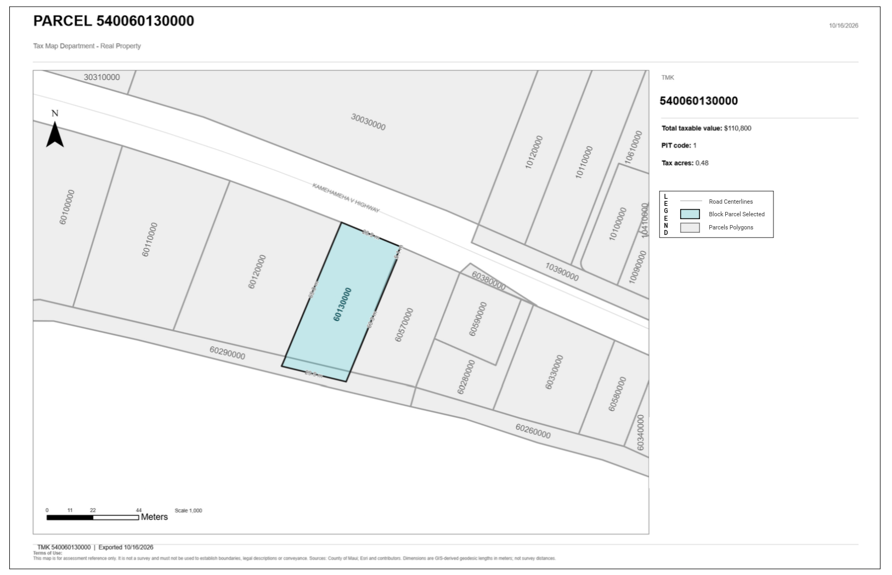

Cadastral Mapping Automation Guide (POC)
Automating bulk parcel mapbook production in ArcGIS Pro with ArcPy, from a Parquet parcel fabric to a multi-page PDF map series.
- ArcPy
- ArcGIS Pro
- Map Series
- Parcel Fabric
- Cadastral Mapping
Overview
Producing parcel map sheets by hand in ArcGIS Pro is slow and hard to repeat: each sheet has to be set up, checked and exported one by one, and scripts often break because of hardcoded file paths. This proof of concept automates the whole run. A single script reads the parcel fabric, drives a staged layout template, and exports every sheet into one PDF mapbook.
Workflow
Follow the process. Expand a step for the details.
-
01
Parcel Data Preparation
-
02
Layout Template Staging
-
03
Bulk Map Series Automation
-
04
QC & PDF Mapbook Export
Tools & Technologies
- ArcGIS Pro & ArcPy — layout template and map series automation
- Python, pandas & PyArrow — reading and preparing the Parquet parcel fabric
- Conda — isolated environment (
prod-map-cadas-env) - Parquet — compact, fast storage for the parcel fabric
Status & Next Steps
Status: In progress (last updated 2026-10-12).
- Finish the cartographic QC of all layer components.
- Move the layout to a web print template so map sheets can be produced from the browser.